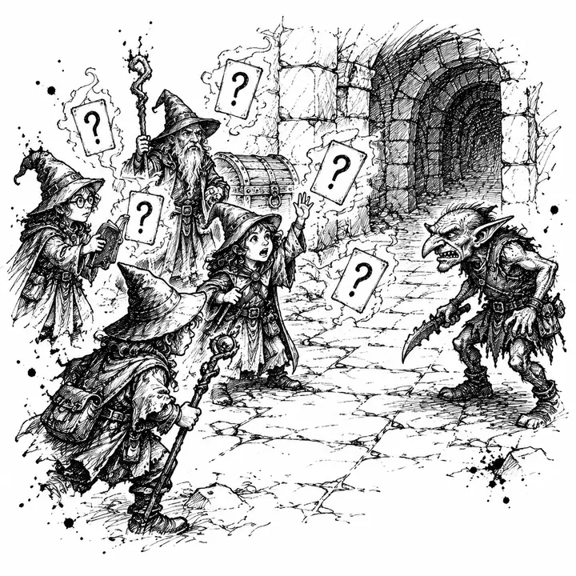
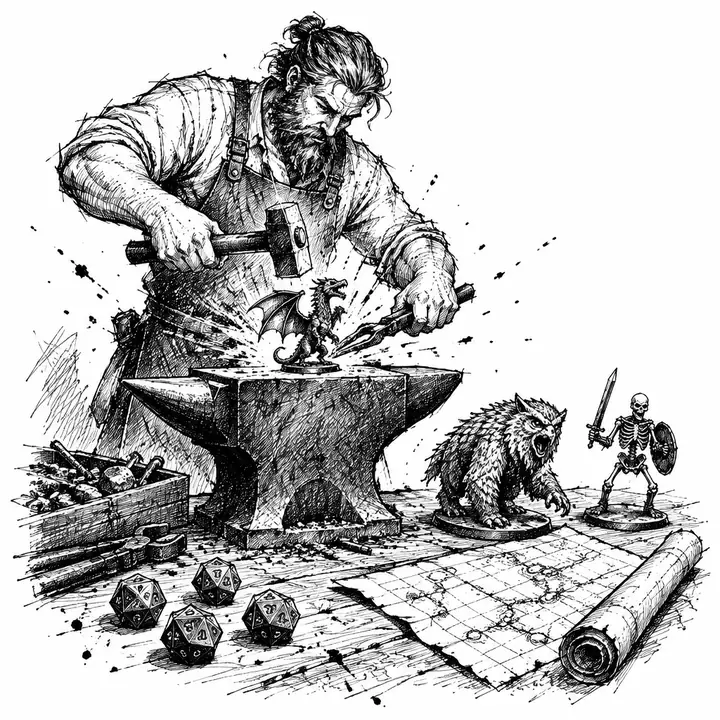
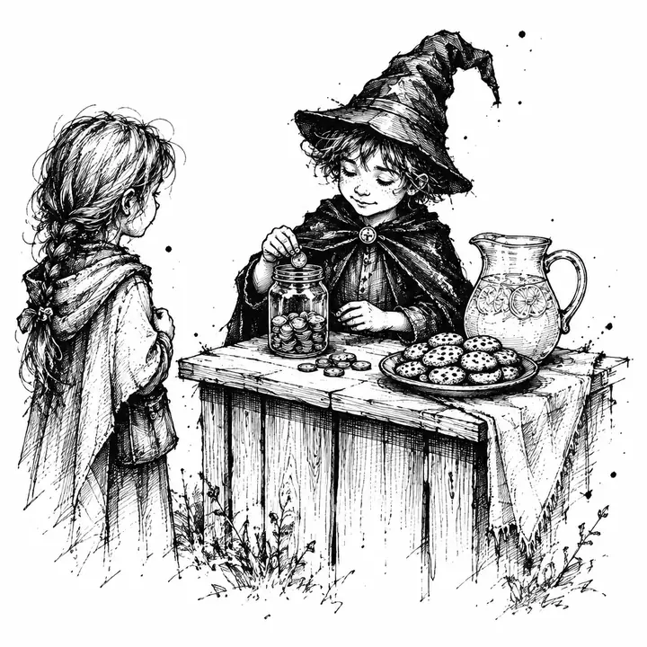
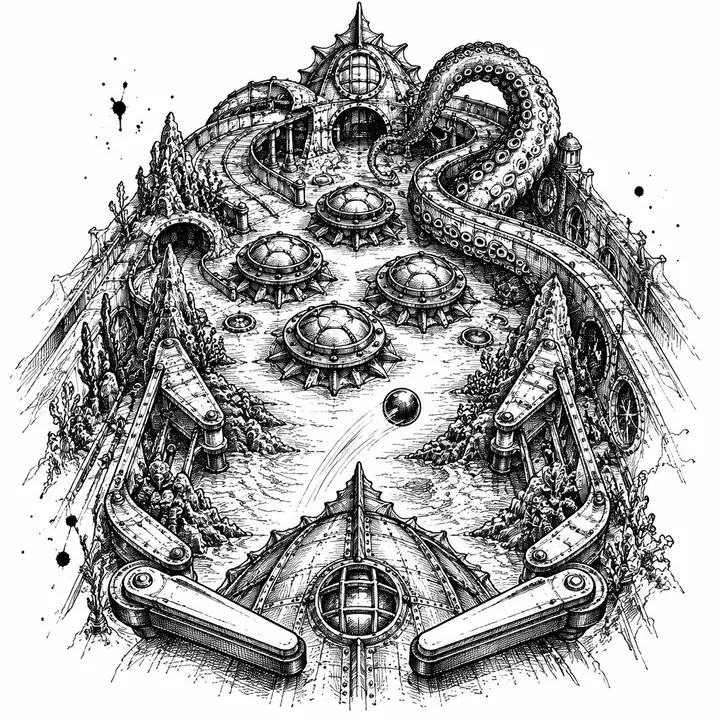
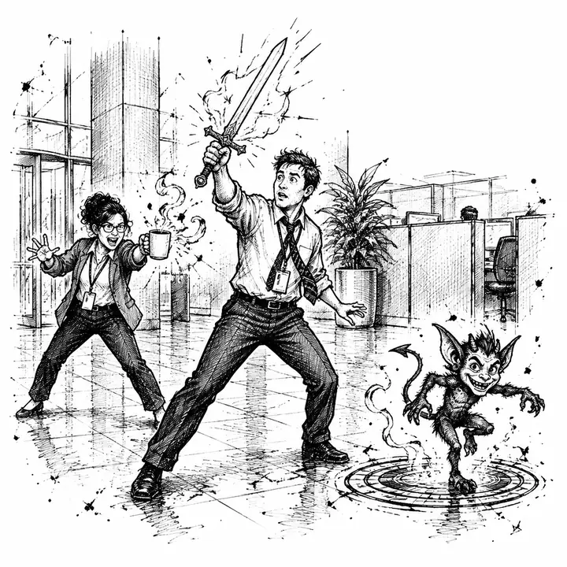
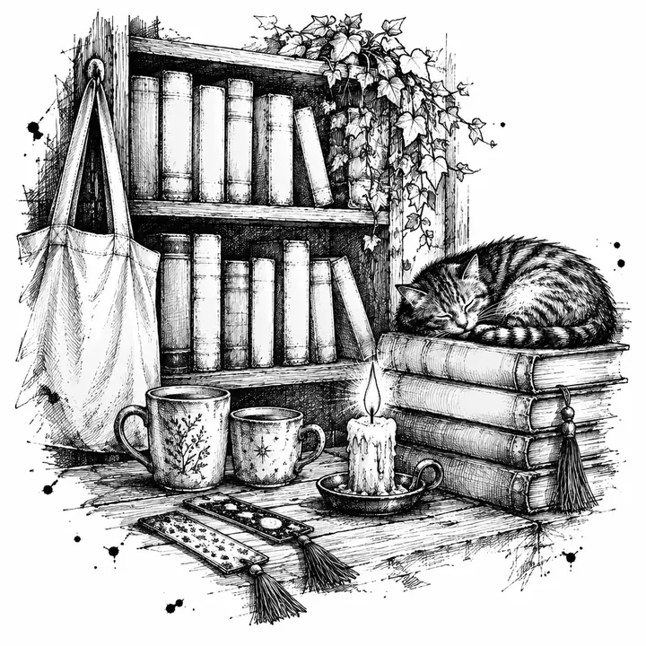

Experiments
A wizard's journal
This journal belongs to
Jake Tlapek
If found, return to jakethewizard.com
The Experiment Journal
Contents
Marketing is the day job. This is where I keep the experiments.
Experiments in games

Quizards
A trivia dungeon crawl for friends.
3
Quizards
Live
Quizards is a co-op dungeon crawl where every attack is a trivia question.
Get it right and the goblin takes the hit. Get it wrong and the goblin swings back. Up to ten friends share one party and one dungeon.
Current Status
Live in the browser. Now I'm rebuilding it as a native app for iPhone and Android.
- Plays in
- Any browser
- Party
- 2 to 10 players
4
Experiments in AI
Alice
My office assistant, still in training.
5
Alice
Testing
Alice is the assistant I'm building to help run my own business.
She keeps the records, drafts a morning briefing, and checks every action before it happens. Nothing goes out without my say-so.
Current Status
Running in a test office. She can't send anything on her own yet, and that switch stays off until she earns it.
- Talk to her by
- Chat
- Built for
- My own office
Private build. No sign-ups.
6
Experiments in tabletop tools

Foeforge
Encounters forged for your table.
7
Foeforge
Live
Foeforge builds D&D fights for the party you actually have.
Most encounter math rates a fight against an average party. Foeforge rates it against yours, then tests it before your players roll initiative.
Current Status
Live at foeforge.com and free to use. Go build a fight and try to break it.
- Built for
- Dungeon Masters
- Monsters
- The free SRD
8
Experiments in kids' books

Big Ideas
Business stories for ages 6 to 9.
9
Big Ideas
Typeset
Big Ideas is a five-book series about kids who start small businesses.
A lemonade stand with a problem. Cookies that cost more to make than they sell for. Every story ends with a worksheet, so by book five a kid has written a business plan of their own.
Current Status
All five stories are drafted. Book one is laid out for print.
- Book one
- The Lemonade Problem
- Ages
- 6 to 9
10
Experiments in pinball

Nautilus
A pinball table from 20,000 Leagues Under the Sea.
11
Nautilus
Tuning
NAUTILUS is a custom pinball table I'm designing in Visual Pinball.
Captain Nemo's submarine, the giant squid, the long dive to Atlantis. Every shot on the table tells part of the voyage.
Current Status
Table script and full ruleset written. I graded the design against the best tables ever built. The critique won. Revisions are next.
- Built in
- Visual Pinball
- Theme
- Jules Verne
12
Experiments in my own tools
Local Dictation
My own version of Wispr Flow.
13
Local Dictation
Private
I talk faster than I type, so I built my own dictation app.
Press a hotkey and talk. The words land wherever my cursor is. It runs OpenAI's Whisper model on my own computer, so my voice never leaves the machine.
Current Status
A working private build on my own Windows machine. It's a tool for me, not a product.
- Runs on
- Windows
- Engine
- Whisper, offline
14
Experiments in adventures

Another Day at the Office
A D&D adventure set in a corporate tower.
15
Another Day at the Office
Draft
It's Monday at GigaCorp, and the CEO's new teleport machine just switched on.
Everyone who plays the company's MMO wakes up as their character. Then fiends start arriving on the delivery pads. The party climbs the tower, floor by floor, to shut it down.
Current Status
The whole first draft is written, all four parts. Art and maps are next.
- Rules
- D&D 2024
- Levels
- 3 to 7
16
Experiments in retail

Plot Twist Goods
Merch for people who read too much.
17
Plot Twist Goods
Live
Plot Twist Goods is my shop for readers.
Mugs, shirts, and totes for fans of LitRPG and dungeon-crawler fiction. The jokes land if you've read the books.
Current Status
The shop is open and taking orders.
- Sells
- Mugs, shirts, totes
- For
- LitRPG readers
18
Afterword
Why I keep this journal
Every experiment in this journal has the same problem my clients have.
Nobody asked for it. Nobody knows it exists. It has to earn a stranger's attention anyway.
Building them keeps my advice honest. I run the sequence on my own work before I tell you to run it on yours.
19
The main quest
Here for the marketing?
That's still the work. Pick your door.
I read every message myself.
20
Experiments from the desk of The Wizard of Marketing
jakethewizard.com
Back to the coverCover
Drag a page corner, tap the page edge, or use your arrow keys.
The Short Version
Rather skim than turn pages? Every experiment, one line each.
- QuizardsA co-op trivia dungeon crawl for up to ten friends.Live
- AliceThe AI assistant I'm building to run my office.Testing
- FoeforgeA D&D encounter builder rated against your real party.Live
- Big IdeasFive business storybooks for kids ages 6 to 9.Typeset
- NAUTILUSA Jules Verne pinball table built in Visual Pinball.Tuning
- Local DictationOffline voice typing that never leaves my machine.Private
- Another Day at the OfficeA D&D adventure where office workers fight up their own tower.Draft
- Plot Twist GoodsMugs, shirts, and totes for LitRPG readers.Live